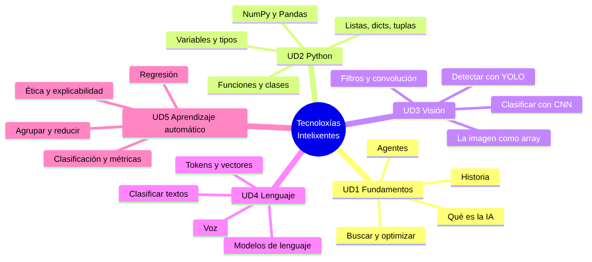

Tecnoloxías Intelixentes
1.º de Bachillerato · IES Chan do Monte (Marín) · Curso 2026-2027 Materia optativa del currículo gallego (Decreto 157/2022). Programación didáctica del 08/10/2026.
La idea de la materia: no se trata de convertirse en programador o programadora, sino de entender cómo funciona la inteligencia artificial por dentro y saber usarla con criterio. El código se genera muchas veces con ayuda de una IA conversacional, pero lo entiendes, lo ejecutas, lo compruebas y lo mejoras tú.
En cifras
| Sesiones | 4 por semana · 140 al año |
| Unidades | 5 |
| Herramientas | Cuadernos Jupyter / Google Colab, Python, IA conversacional (cuentas anonimizadas del centro), aula virtual |
| Libro de referencia | J. F. Puentes Calvo, Tecnologías Inteligentes (2025, CC BY-NC-ND 4.0) · ver El libro |
Objetivos de la materia
| Objetivo | Qué significa | Dónde se trabaja sobre todo |
|---|---|---|
| OBX1 | Analizar y valorar el impacto social y ético de la IA con pensamiento crítico: seguridad digital, igualdad, normativa | Todas las unidades (cierre de cada una) |
| OBX2 | Entender los agentes inteligentes y sus aplicaciones reales | UD1 |
| OBX3 | Interactuar con modelos basados en datos, reconociendo el papel de la persona en las decisiones | Visión, Lenguaje, UD5 |
| OBX4 | Desarrollar soluciones prácticas con razonamiento algorítmico y programación | UD2 y proyectos |
Las cinco unidades
| UD | Unidad | Sesiones | Peso | Trimestre | Página |
|---|---|---|---|---|---|
| 1 | Conceptos clave de la IA | 10 | 5 % | 1.º | UD1 |
| 2 | Programación para la IA | 60 | 40 % | 1.º y 2.º | Teoría · Ejercicios |
| 3 | Visión artificial | 20 | 15 % | 1.º | Visión |
| 4 | Procesamiento del lenguaje natural | 25 | 20 % | 2.º | Lenguaje |
| 5 | Aprendizaje automático | 25 | 20 % | 2.º y 3.º | UD5 |

Sobre el orden de Visión y Lenguaje: esta web sigue la programación oficial y el libro, con Visión artificial como UD3 y Lenguaje natural como UD4. En el aula virtual, Lenguaje natural aparece antes. Los contenidos son los mismos en los dos casos.
UD1 Conceptos ──► UD2 Python ──┬──► Visión artificial ──┐
(¿qué es IA?) (herramienta) ├──► Lenguaje natural ───┼──► UD5 Aprendizaje automático
└──────────────────────────┘ (cómo aprende un modelo)Criterios de evaluación
UD1 · Conceptos clave
- CA2.1: propiedades básicas de un sistema de IA y su relación con los algoritmos. Mínimo: resolver en papel juegos de ingenio sencillos sistematizando la solución.
- CA2.2: fundamentos de los agentes inteligentes. Mínimo: enumerar sensores y actuadores comunes y el fenómeno físico en el que se basan.
- CA2.3: aplicaciones reales de los agentes. Mínimo: adaptar el concepto de agente a problemas del día a día.
- CA2.4: aspectos básicos de los agentes. Mínimo: describir los componentes necesarios para crear un agente para una actividad.
UD2 · Programación
- CA1.1: fundamentos de Python. Mínimo: identificar los elementos básicos de un script.
- CA1.2: bibliotecas y herramientas de aprendizaje automático. Mínimo: conocer las bibliotecas por sus funcionalidades.
- CA1.3: habilidades de programación para IA. Mínimo: ejecutar scripts en Jupyter, posiblemente con generadores automáticos de código.
Visión artificial
- CA3.1: la imagen como matriz numérica: píxeles y canales de color.
- CA3.2: transformaciones básicas, identificación y segmentación de patrones con Python.
- CA3.3: clasificación de imágenes y ejemplos de uso.
- CA3.4: plan sistemático para un reto de visión (por ejemplo, estimar la profundidad).
- CA3.5: exponer ante la clase una propuesta de proyecto.
- CA3.6: tecnologías que pueden atentar contra los derechos de las personas, y soluciones.
Lenguaje natural
- CA4.1: el sonido como onda: características y codificación.
- CA4.2: tokenización y clasificación básica de textos.
- CA4.3: análisis de emociones y reconocimiento de voz.
- CA4.4: consultas a LLM, contraste con otras fuentes y técnicas de prompting.
- CA4.5: limitaciones y riesgos de los LLM.
- CA4.6: presentar un proyecto básico de PLN.
UD5 · Aprendizaje automático
- CA5.1: ciclo de vida de los datos.
- CA5.2: selección y preparación de datos, con anonimización.
- CA5.3: normalización y reducción de dimensionalidad.
- CA5.4: aprendizaje supervisado, no supervisado y por refuerzo.
- CA5.5: evaluación, validación cruzada e hiperparámetros.
- CA5.6: predicción y clasificación.
- CA5.7: exposición gráfica de modelos, sesgos y errores.
- CA5.8: análisis de un conjunto de datos sesgado y de los errores de un clasificador binario.
Cómo se evalúa
| Elemento | Peso |
|---|---|
| Tareas de clase | 30 % de cada unidad |
| Prueba práctica y/o teórica | 70 % de cada unidad |
| Condición | Hay que aprobar las dos partes |
- Nota de cada trimestre: media ponderada de las unidades trabajadas (pesos 5 / 40 / 15 / 20 / 20). Se aprueba con un 5; se redondea a partir de ,5.
- Nota final ordinaria: 1.er trimestre 30 % · 2.º trimestre 30 % · 3.er trimestre 40 %, con las notas reales sin redondear.
- Recuperación: plan específico durante el curso. Plazo final en los 15 primeros días de junio, con el plan entregado a finales de mayo.
Cómo se trabaja
| Tipo de actividad | Ejemplo |
|---|---|
| «Pregúntale a tu IA favorita…» | Investiga un concepto con la IA y comprueba la respuesta en otra fuente |
| «Pídele que cree el código en Python para…» | Escribes el prompt, ejecutas la celda, la explicas línea a línea y la corriges |
| Diálogo con la IA | Iterar el prompt hasta llegar a una solución que entiendes (prompt engineering) |
| Problemas en papel | Estados, grafos, optimización: pensar antes de programar |
| Proyectos en equipo | Descomponer un problema, repartirlo y exponerlo ante la clase |
| Debates | Vigilancia, empleo, sesgos, clonación de voz, lenguas minoritarias… |
Regla de oro: la IA es una herramienta no fiable por defecto. Todo lo que diga, o el código que genere, se verifica.
Actividades complementarias: visitas a empresas del entorno (1.º y 2.º trimestre) y charlas con especialistas.
Recursos
- Aula virtual del centro: materiales, tareas y entregas.
- Google Colab: Python en el navegador, sin instalar nada, con el asistente Gemini integrado.
- Repositorio de notebooks del libro: github.com/FranPuentes/iTI2025.
- En esta web: Teoría del curso · Ejercicios E1–E165 · Análisis de datos: de los datos al modelo · Mapa visual de librerías · El libro, capítulo a capítulo.
- Ampliación de análisis de datos: módulo «Análisis de datos (AD)», mp5101-ad.vercel.app. Cuatro unidades: adquisición, EDA, limpieza y modelado. Su estructura inspira el itinerario de análisis de datos.